Custody · Provenance · Trust
From wafer to board: sort, package, test and ship for low-volume, high-mix chips. Built to suit.
Andrew Wingate · Evezor Inc. · wafer.space
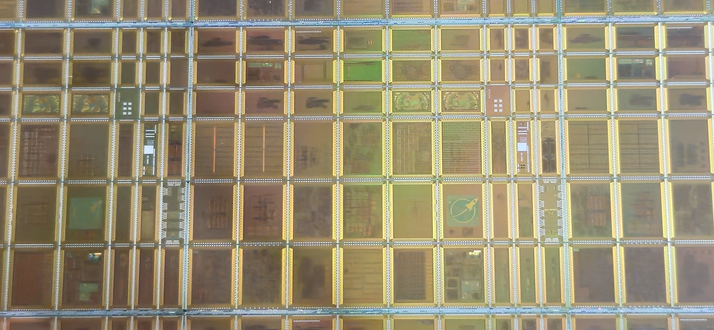
wafer.space Run 2 reticle
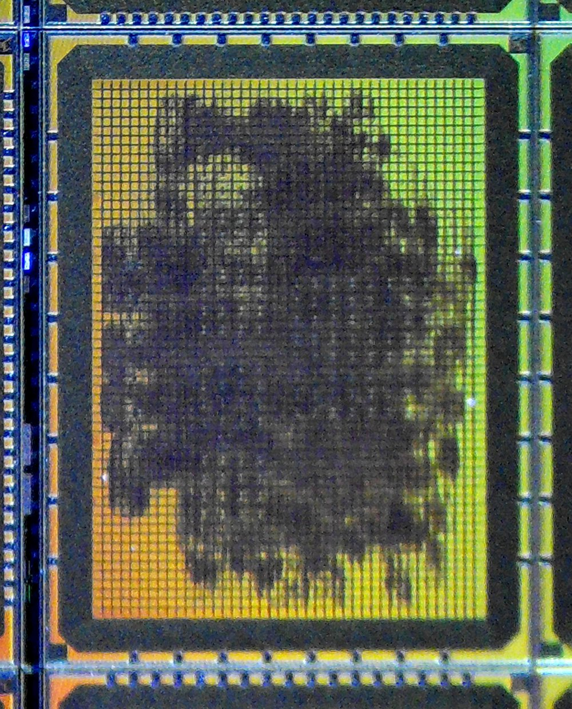
A cryptographic ASIC with a PUF-protected long-term secret. You sponsored it.
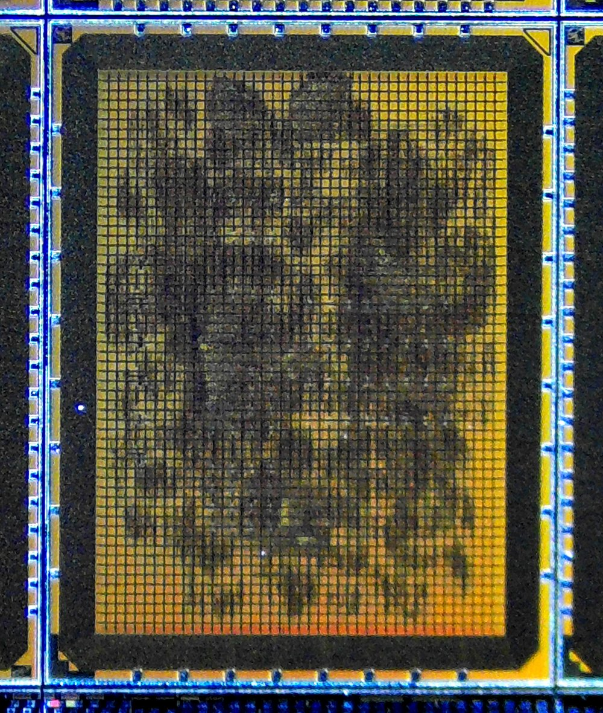
The next chip, on the next run. Also yours.
I don't know your risk tolerance, but I have large dreams.
Every tier delivers on its own and sets up the next. Fund as far down the ladder as you like.
The grant lifts the whole open-silicon ecosystem, not one project.
Read all 2,000 MEME chips × 48 taps. Publish the data and the tools.
Diode bond check for every wafer.space chip. The PUF read is an add-on.
Wafer → test + firmware/keys → tape & reel. He runs it himself.
CoB productized (done, with Tim). LGA next.
Dicing partner + pick + test + tape & reel. Low-volume, high-mix, made here.
A 2,000-chip PUF test vehicle on GF180.
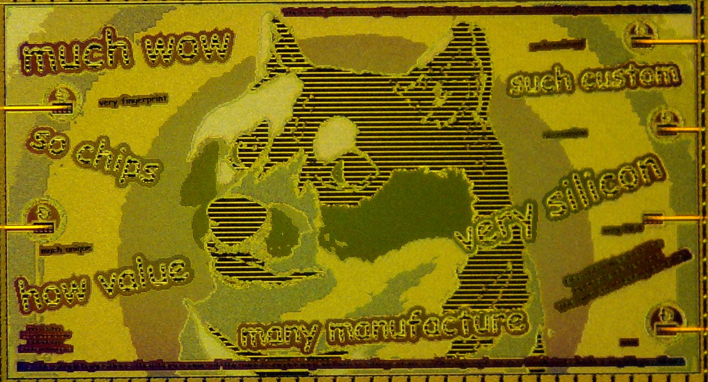
MEME die, as fabricated
I'm a toolmaker at heart. Both chips are artifacts used to prove tools.
EuroSynth die · a synth voice in silicon
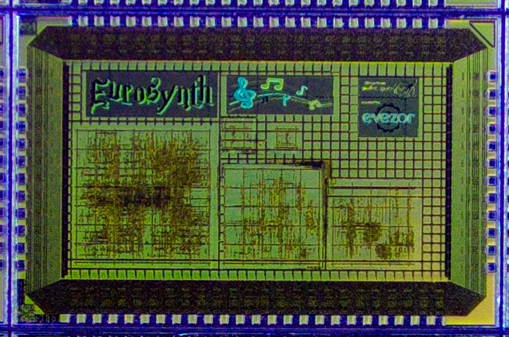
MEME die, as fabricated
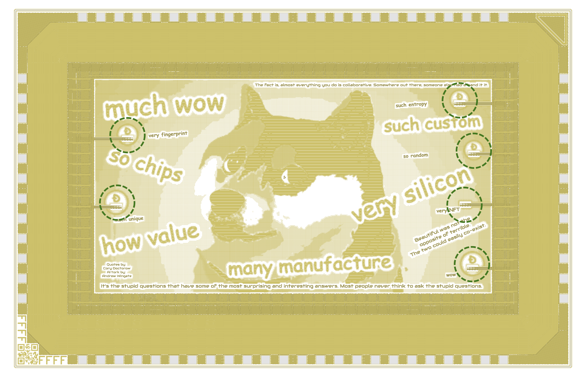
The MEME die, 3.9 × 2.5 mm. Doge art on all five metal layers. Circled: the six PUF medallions.
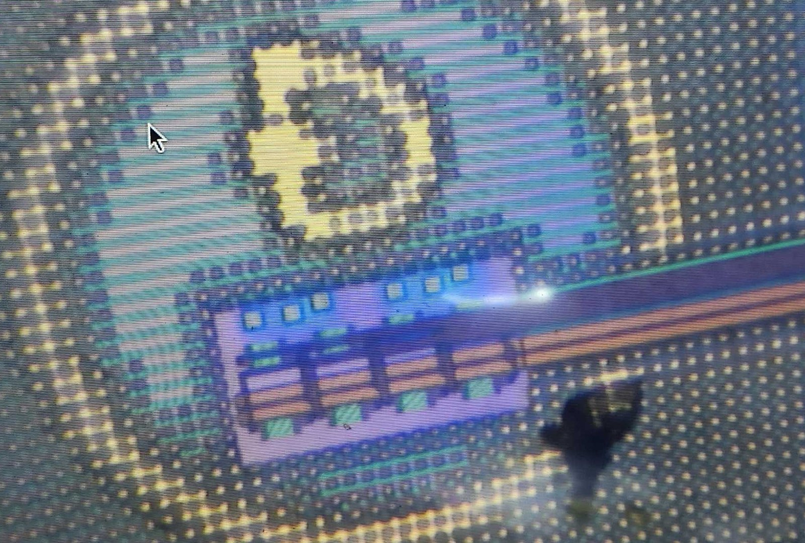
Real die, under the microscope · PUF cluster is the lavender block under the coin
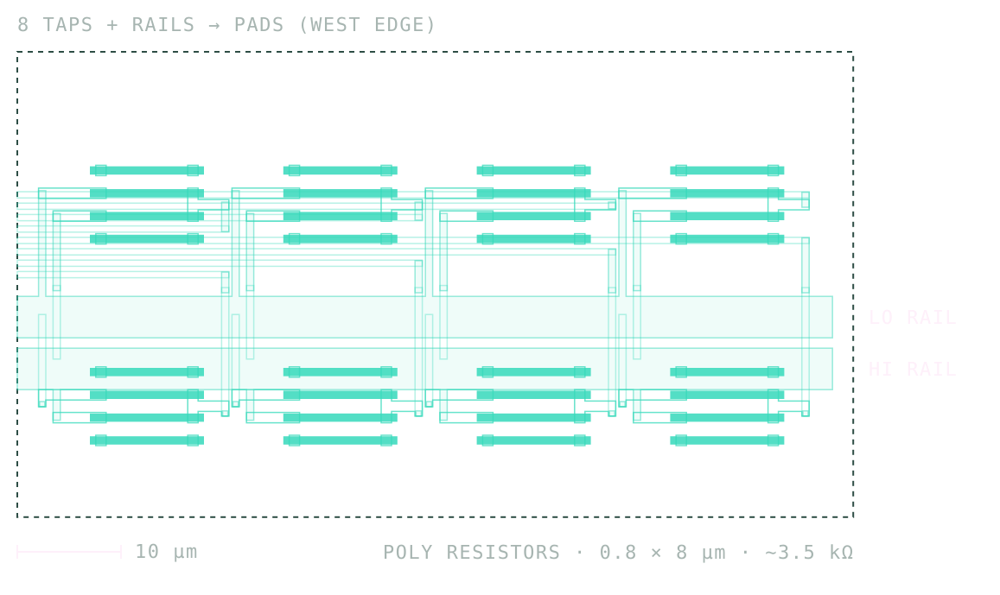
rk cancels process spread and temperature.This kind of PUF could get less reliable as processes improve.Tim Ansell, wafer.space (paraphrased)
Better processes mean tighter matching, and tighter matching means less mismatch to fingerprint. Nobody has the data to say how much is left.
Less spread means fewer bits per tap. How much spread is there today? Unknown.
Needs side-channel resistance and fuzzy extractors. That's Cloneless's job.
No two dies share a fingerprint. Every chip is a one-of-one.
The fingerprint can't be cloned. The die proves it's genuine.
A normal NFT points at a file anyone can copy. Here the uniqueness is in the silicon.
The fingerprint can be public. It proves identity by being impossible to reproduce.
Unpowered: 1 V in, 48 readings out. No firmware or network to trust.
Standard GF180 poly resistors under the art: about 0.2% of the die.
Published as an open dataset. Anyone can test whether it's truly random.
Plus noise and entropy data for fuzzy extractors.
Nobody reads 2,000 chips by hand. The rig that reads them is tier B: the standard test rig.
One tile per chip. No two read alike.
The lifecycle every chip goes through, and where the industry leaves us hanging.
Sorted, packaged, tested. My needs are the same as every open-silicon chip's.
Industry handles 8–10 unique sorts per wafer max.
Packaging houses want 1M–3M. Drawn to scale. No package means no test either.
The share of bunnie's COG that go to assembly and test providers.
What wafer.space does now, and the troubles we hit.
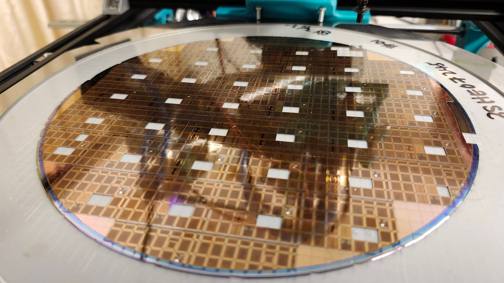
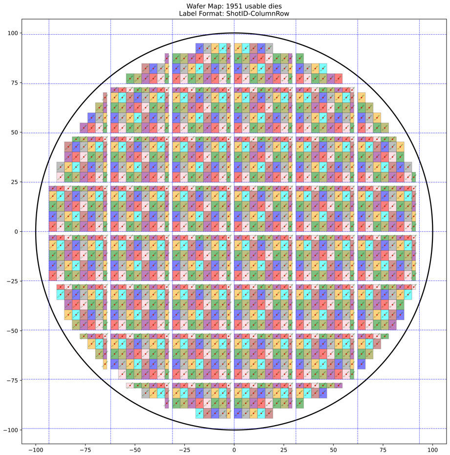
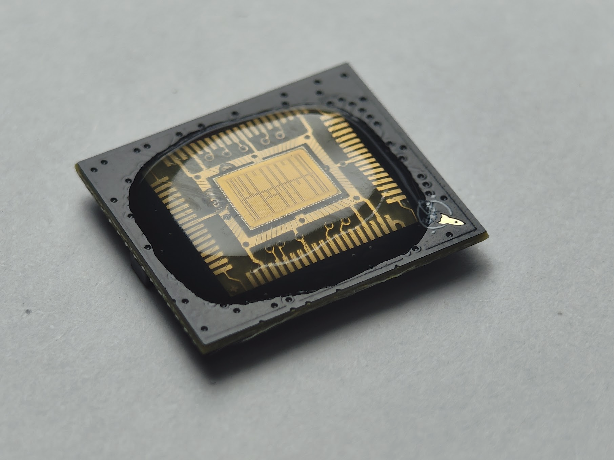
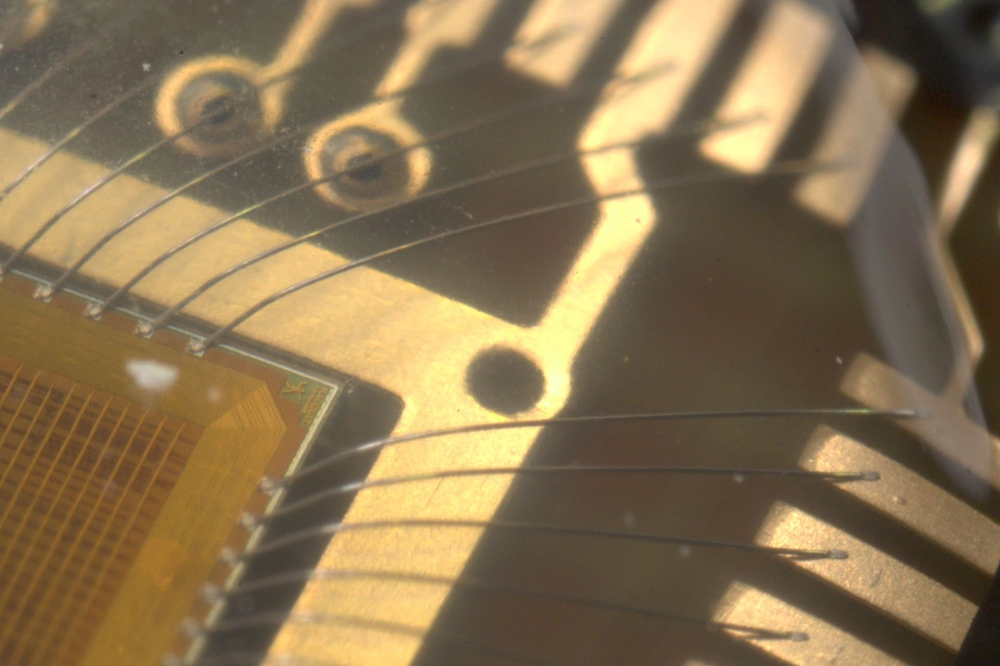
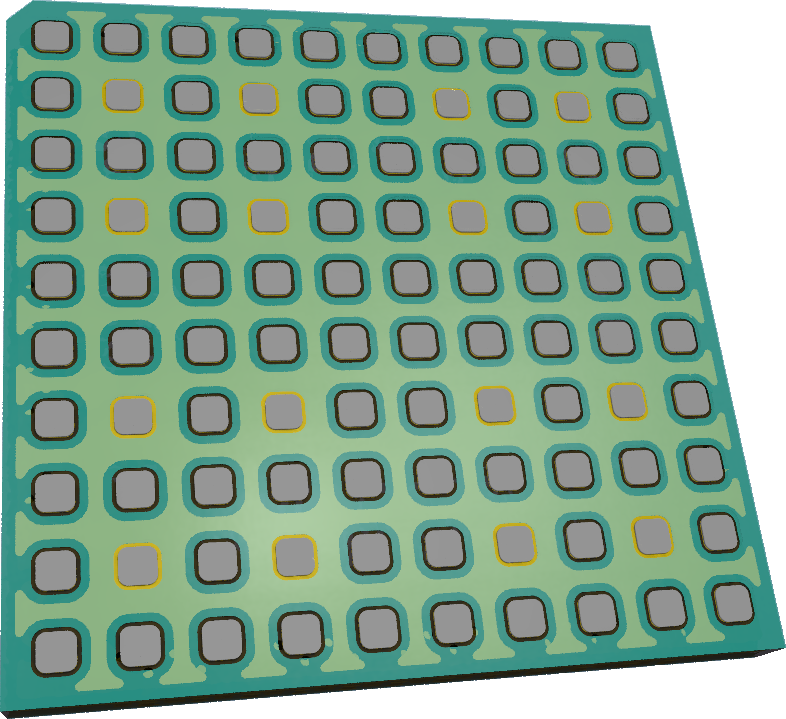
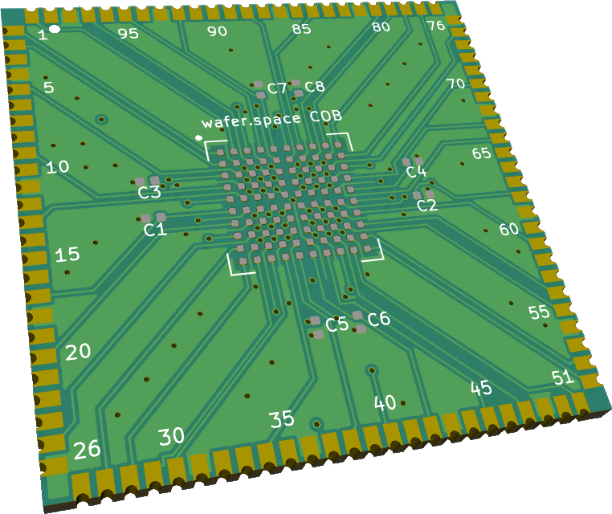
MEME and every wafer.space design share one rig. Swap the insert, drop it in, no solder, and every contact is checked.
What the Baochip needs won't come from a spec sheet. It shows up as we build.
The goal: a low-cost way to test many designs.
Such any designer can write or make their own tests.
Wafer to tape & reel, on his own line.
His customers hand him their own keys, generated however they like, or their own firmware. Whatever they need, built in.
Keys and firmware are loaded at a step he owns. They never pass through a third party.
Packaging and provisioning houses take ~30% of his chip cost today.
We've talked it through. He wants to runs it himself
Singapore, through decisions made decades ago sits in a place to lead open silicon for the world.
Low-volume, high-mix fits on a bookshelf.
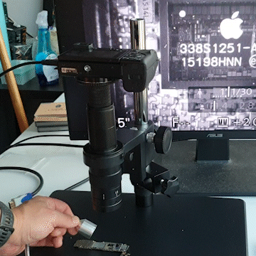
Bunnie built IRIS to check chips after packaging. Vertical integration means you don't have to defend against your own supply chain.
We don't cut prices. We cut steps, and that only works when one operator owns all of them.
We don't cut prices. We cut steps, and that only works when one operator owns all of them.
The last mile. A little red dot.
Fabbing Dicing Sorting Bonding Packaging Testing SharingAll within an hour of each other.
Small is the fit. Small is beautiful.
I believe Singapore could be the beating heart of open silicon.
An open PUF dataset. Is it truly random?
AA standard tester and SMT-ready parts for every customer.
BDHis own line. Keys stay in his hands, and the 30% cut is gone.
CA path from 1,000 dies to assembled boards.
BDEA new low-volume, high-mix niche.
EYou've backed open silicon since Run 1. This is the next layer. MEME is the first chip through the last mile. It won't be the last.
Andrew Wingate · Evezor Inc.
evezor.com
Pick from the menu. I'll build to suit.
An open dataset from 2,000 chips
Every wafer.space chip checked
His own line, his keys
CoB done, LGA next
Low-volume, high-mix, made here
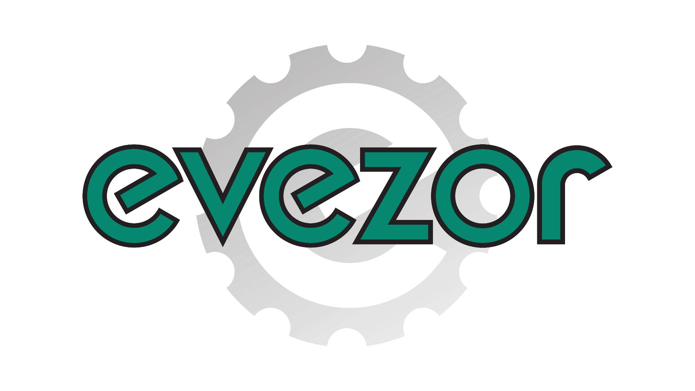
The Back End of Open Silicon